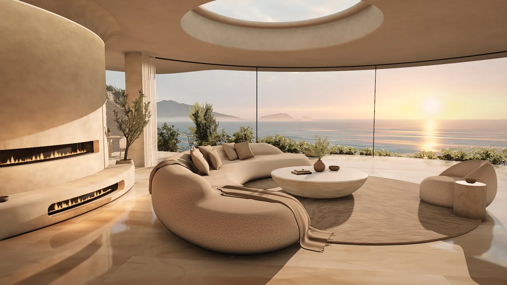
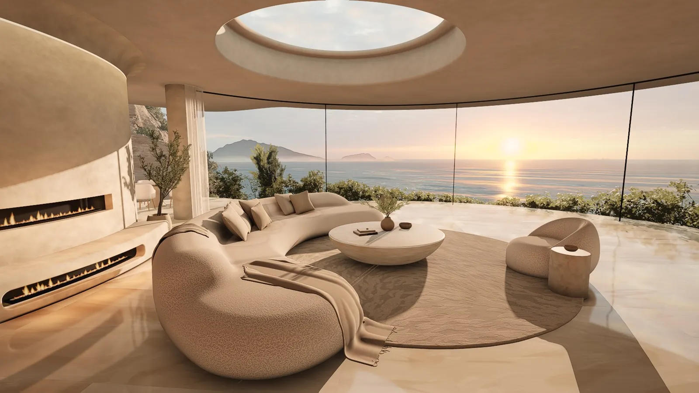
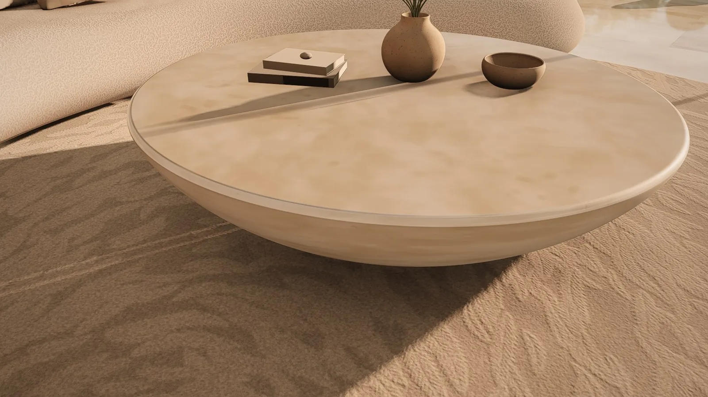

数据通过公开 GitHub API 获取，时间 2026-11-04 15:45（UTC+8）。仓库建于 2026-11-04 07:20（UTC+8），只有 1 个整体提交（fcc3379），没有 Releases，也没有在线演示站。本站计数：src/ 下 30 个 JS 模块、9,531 行；tools/ 下 30 个脚本（Python / Node / PowerShell）约 4,300 行；public/ 素材约 147 MB（模型、纹理、六套天空全景与 GI 烘焙数据）。

docs/hero.jpg，依 MIT 许可转载，缩小并转为 WebP）。画面为实时渲染器的截图，不含任何真人。它是什么
Casa Ocaso（西班牙语，“日落之家”）是一个实时 3D 室内场景，属于建筑可视化（archviz）一类：只有一个房间，但做到了“像效果图一样”的质感，并且能在浏览器里交互。技术栈是 three.js r187 的 WebGPU 渲染器与 TSL 节点材质（Three Shading Language，用 JS 写着色器节点），需要 Chrome / Edge 113+ 这类支持 WebGPU 的浏览器。
作者 README 的原话：Built with Claude Code (Opus 5.5) from five reference renders
（用 Claude Code（Opus 5.5）照着五张参考渲染图做出来）。这五张参考图不在仓库里——.gitignore 里写着“reference images (not ours to redistribute)”，所以外人无法对照原图检查还原度 ⚠️。
能做的事：拖动环视、滚轮前后走、WASD 漫游；按 1–8 飞到预设机位（ref1–ref5 对应五张参考图的构图，另有天窗 oculus、露台 terrace、走廊 corridor）；用 ?view= 把窗外换成金色海面、黄金时刻、海雾、黄昏、悬崖清晨、夜晚六种天空。


以上为作者仓库 docs/ 中的渲染截图，依 MIT 许可转载并缩小、压缩为 WebP。README 提到的 45 秒展示短片在 video/ 目录，该目录被 .gitignore 排除、没有进仓库，本站也未转载。
它是怎么做出来的
README 的“How it is built”一节写得很密。拆开来看，它的思路是：能用真实数据的地方用真实数据，用不了的地方用程序化生成去“接”上，然后用数值把颜色对齐参考图。
1. 窗外：真实全景 + 着色器补出一片海
窗外不是建模的，而是 Poly Haven 的六张 CC0 HDR 全景，先旋转到“太阳在参考图里的位置”，再切成 4K 立方体贴图（tools/process_hdri.py）。全景照片里太阳是过曝截断的，背景着色器会按实测的 HDR 光晕把太阳“补回来”，室内太阳光的颜色与强度也取自同一测量。最有意思的是“金色海面”这一视图：原片是海平面高度拍的海滩，作者只保留天空与地平线，地平线以下改由着色器画出从崖顶俯瞰的开阔海面——长峰涌浪、用菲涅尔反射原片自己的天空、GGX 太阳闪光带，再加上海湾里的岛屿和雾带（src/world/islands.js）。
2. 光：烘焙的探针 + 实时阴影
太阳用 VSM 软阴影；间接光用 LightProbeGrid（二阶球谐 L2 SH、两次反弹），每种天空各烘焙一份（node tools/bake_gi.mjs），切换天空时在两份之间插值。再叠上暖色 LED 灯带、带边缘感知降噪的 GTAO 环境光遮蔽、低而宽的泛光、ACES 色调映射和带柔和高光肩部的显示空间调色。
3. 颜色：拿数字对齐参考图
README 说颜色、明暗比与调色是按参考图数值拟合出来的：在对应区域比较 CIELAB 色值、比较色调分布、做反照率“去光照”。拟合工具放在 .tools/colorfit，这个目录同样被 gitignore，仓库里看不到 ⚠️。这和同作者 Athenaion 的“亮度百分位目标”是同一路数：把“像不像”变成可以测量的数字，交给 agent 反复迭代。
4. 软家具：SDF + 行进立方体
沙发、躺椅、餐椅、毯子这类软体，是在 Python 里用有向距离场（SDF）描述形状，再用 marching cubes 网格化（tools/assets/*.py，公共工具在 sdf.py），法线取自 SDF 本身所以很圆润，环境光遮蔽也由 SDF 算好写进顶点色；毯子做了布料模拟。布克雷面料（bouclé，一种毛圈纱）是一张烘焙好的卷曲毛圈纹理，配一个“包裹式”的织物光照模型，让低角度的夕阳在曲面上柔和地衰减。成品以 .glb 放在 public/models/。
5. 石材与抹灰：程序化噪声
石灰抹灰墙、石灰岩壁炉（src/scene/limestone.js）和哑光洞石都是程序化材质，用一个浮点精度的平滑浮雕噪声（materials.js 里的 reliefGradient），并随屏幕上的采样尺度淡出，避免远处闪烁；羊毛地毯用生成的簇绒图。地面是抛光奶油色洞石板，带模糊的平面反射。
6. 性能：动时降分辨率，停下就变清晰
交互时以动态分辨率渲染并用 TAAU 重建，镜头一停就逐步提升到全分辨率；截图与视频走 ?q=ultra 的全分辨率 TRAA + GTAO 路径。
7. 短片：离线逐帧渲染
45 秒的穿梭短片是从实时场景逐帧离线渲染的：按音乐节拍切镜头的相机路径、4K 分块渲染（每块重开浏览器、带内存/显存守护、可续跑），再在线性光空间平均子帧做 180° 快门运动模糊，最后加清晰度、光晕（halation）、胶片肩部、暗角、横向色差、颗粒与 2.2:1 黑边，编码成 H.264。
快速上手
git clone https://github.com/Leonxlnx/casa-ocaso
cd casa-ocaso
npm install
npm run dev
# 打开 http://127.0.0.1:5173 （需 WebGPU 浏览器）
# 例：?shot=ref1&view=dusk 或 ?q=ultra注意：仓库带了约 147 MB 的素材，克隆会比较慢；首次加载要编译着色器，作者说需要几秒钟。本站未在 GPU 环境实际运行 ⚠️。
与同作者 Athenaion 对比
| Athenaion | Casa Ocaso | |
|---|---|---|
| 题材 | 一整座古希腊世界（室外、超大尺度） | 一间客厅（室内、近距离） |
| 渲染 | 离线累积采样出 4K 静帧 | 浏览器内实时交互（WebGPU） |
| 素材 | 零外部素材，全部程序化 | 窗外用真实 CC0 全景与纹理，家具与石材自己生成 |
| 参考图 | 9 张 AI 参考图，附对比图 | 5 张参考渲染图，未随仓库发布 |
| 规模 | 168 模块 / 约 4.4 万行 | 30 模块 / 约 9,500 行 + 30 个工具脚本 |
| 过程披露 | 详细写了多 agent 分工与流程 | 只写“用 Claude Code 做”，多 agent 编排脚本被 gitignore（tools/*_workflow.js） |
启发
- “真实 + 生成”混合比纯生成更省力。天空直接用照片，只在照片不够用的地方（海平面以下）用着色器补，比从零造天空更快也更真。
- 让 agent 能量化“像不像”。CIELAB 区域对色、色调分布比较，把审美目标转成数字，agent 才能自己闭环迭代。
- 重活放到离线工具里。SDF 家具、GI 探针、全景切割都预先烘焙好，浏览器只负责实时那一部分。
- 工具链同样是作品。无头 WebGPU 截图、GPU 锁排队、参考图对比堆栈——这些让多个 agent 能并行“渲染—比对—修正”。
⚠️ 核实与说明
- ⚠️ “用 Claude Code（Opus 5.5）构建”为作者自报；耗时、agent 数量等未披露，无法核实。
- ⚠️ 五张参考渲染图、
.tools/colorfit拟色工具、多 agent 编排脚本、45 秒短片都不在仓库内，还原度与流程无法独立核对。 - ⚠️ 本站未在支持 WebGPU 的 GPU 上实际运行，性能（动态分辨率、TAAU）与“首次加载几秒”均为作者描述。
- 许可：
LICENSE正文为 MIT（Copyright (c) 2026 Leon Lin），末尾附注第三方素材另有许可；GitHub API 因此把许可识别为 “Other / NOASSERTION”。public/中的全景与纹理来自 Poly Haven、ambientCG，作者标为 CC0；短片配乐 Scott Buckley《The Great Sea》为 CC-BY 4.0，未随仓库发布。（核于 2026-11-04） - 本页的统计与计数均基于 2026-11-04 的提交 fcc3379。
附录：README 全文中文翻译
译自 Leonxlnx/casa-ocaso README（提交 fcc3379，2026-11-04），依 MIT 许可翻译转载。代码、命令与文件名保留原文。
Casa Ocaso
一间黄金时刻悬崖客厅的实时 3D 再现，在浏览器中运行，使用 three.js r187（WebGPU 渲染器、TSL 节点材质）。由 Claude Code（Opus 5.5）依据五张参考渲染图构建；可以在六张真实天空全景之间切换玻璃外的景色。
运行
npm install
npm run dev在支持 WebGPU 的浏览器（Chrome / Edge 113+）中打开 http://127.0.0.1:5173。建议使用独立显卡或较新的集成显卡；首次加载会花几秒钟编译着色器。
URL 参数：?shot=ref1..ref5|oculus|terrace|corridor、?view=golden-hour|sea-fog|dusk|cliff-morning|beach-sunrise|night、?q=ultra（全分辨率 TRAA + GTAO 路径）、?ao=0。
操作
| 输入 | 动作 |
|---|---|
| 拖动 | 环视 |
| 滚轮 / 双指捏合 | 向前 / 向后走 |
| 右键拖动或 Shift 拖动 | 横移 |
| W A S D、方向键、Q / E | 行走、转向、降低 / 升高 |
| Ctrl + 滚轮 | 缩放（视场角） |
| 1 – 8 | 飞到某个机位 |
| H | 隐藏界面 |
它是怎么构建的
- 玻璃之外——来自 Poly Haven（CC0）的真实 HDR 全景，旋转到让每个太阳都位于参考图中太阳所在的位置，以线性白点切成 4K 立方体面（
tools/process_hdri.py）。背景着色器用实测的 HDR 光晕恢复被截断的太阳；太阳光的颜色和强度也来自同一测量。对于海平面高度拍摄的海滩全景，天空与地平线保留照片，地平线以下由着色器绘制从崖顶看到的开阔海面（长峰涌浪、以菲涅尔反射照片自身的天空、GGX 太阳闪光带），海湾中还有岛屿与雾带（src/world/islands.js），并按照片的雾霭进行渐变融合。 - 光照——VSM 柔和太阳阴影 + 按视图预烘焙的
LightProbeGrid（L2 SH，2 次反弹）（node tools/bake_gi.mjs），在切换视图时混合；暖色 LED 灯槽；带边缘感知降噪的 GTAO；宽而低的泛光；ACES；带柔和高光肩部的显示空间调色。颜色、光照平衡与调色均按参考图数值拟合（.tools/colorfit：匹配区域的 CIELAB、色调分布、反照率去光照）。 - 软家具——用行进立方体网格化的有向距离场（
tools/assets/*.py，共享工具tools/assets/sdf.py），平滑的 SDF 法线，写入顶点色的 SDF 环境光遮蔽，经布料模拟的毯子。布克雷 = 一张烘焙的卷曲毛圈纹理（public/textures/boucle/loops.jpg）配合包裹式织物光照模型，使低角度的太阳在形体上柔和衰减。 - 石材与抹灰——程序化、随采样尺度淡出：平滑的浮点精度浮雕噪声（
src/scene/materials.js中的reliefGradient），用于石灰抹灰、石灰岩壁炉（src/scene/limestone.js）和哑光洞石；羊毛地毯使用生成的簇绒贴图。 - 地面——抛光的奶油色洞石板，带模糊的平面反射。
- 性能——交互模式以动态分辨率渲染并用 TAAU 重建，相机静止时提升到全分辨率；截图使用
ultra路径。
工具
node tools/shoot.mjs ref1 ref2 "cam:x,y,z,yaw,pitch,fov:name"——无头 WebGPU 截图powershell -File tools/gpu.ps1 shoot.mjs .../bake_gi.mjs <view>——同上，但加了 GPU 锁，让并行的工作进程排队使用 GPUpython tools/compare.py .tools/shots ref1——参考图与渲染图的对比堆栈（请把你自己的参考图放到refs/ref1.png…refs/ref5.png；原始参考图不属于本仓库）- 素材构建脚本（
tools/assets/*.py、tools/process_hdri.py）需要 Python 3.11 及 numpy、scipy、opencv 和 trimesh；构建好的素材已在public/中。
短片
video/ 中 45 秒的穿梭短片是从实时场景逐帧离线渲染的：
powershell -File tools/render_chunks.ps1——相机路径.tools/video/path.json（镜头切在音乐重拍上、变速、每个镜头的运动模糊子采样数）经tools/render_video.mjs以 4K 分块渲染，每块使用全新浏览器，并有内存 / 显存守护。可续跑。python tools/video_merge.py .tools/video/sub4k .tools/video/merged4k——180° 快门运动模糊（子帧在线性光空间中平均）。python tools/video_finish.py .tools/video/merged4k .tools/video/final——清晰度、光晕、胶片肩部、暗角、横向色差、颗粒、2.2:1 黑边；输出 4K 与 1080p。powershell -File tools/video_encode.ps1 -Frames .tools/video/final/1920x1080 -Out video/x.mp4——淡入淡出、音乐、H.264 BT.709（-Mode x/master/preview）。
致谢
全景：Greg Zaal、Jarod Guest、Rico Cilliers——Poly Haven（CC0）。纹理：Poly Haven 与 ambientCG（CC0）。短片音乐：Scott Buckley《The Great Sea》——以 CC-BY 4.0 发布，www.scottbuckley.com.au（不包含在本仓库中）。
许可
代码：MIT，见 LICENSE。public/ 中的第三方全景与纹理为 CC0。
LICENSE 原文
MIT License
Copyright (c) 2026 Leon Lin
Permission is hereby granted, free of charge, to any person obtaining a copy
of this software and associated documentation files (the "Software"), to deal
in the Software without restriction, including without limitation the rights
to use, copy, modify, merge, publish, distribute, sublicense, and/or sell
copies of the Software, and to permit persons to whom the Software is
furnished to do so, subject to the following conditions:
The above copyright notice and this permission notice shall be included in all
copies or substantial portions of the Software.
THE SOFTWARE IS PROVIDED "AS IS", WITHOUT WARRANTY OF ANY KIND, EXPRESS OR
IMPLIED, INCLUDING BUT NOT LIMITED TO THE WARRANTIES OF MERCHANTABILITY,
FITNESS FOR A PARTICULAR PURPOSE AND NONINFRINGEMENT. IN NO EVENT SHALL THE
AUTHORS OR COPYRIGHT HOLDERS BE LIABLE FOR ANY CLAIM, DAMAGES OR OTHER
LIABILITY, WHETHER IN AN ACTION OF CONTRACT, TORT OR OTHERWISE, ARISING FROM,
OUT OF OR IN CONNECTION WITH THE SOFTWARE OR THE USE OR OTHER DEALINGS IN THE
SOFTWARE.
---
Third-party assets in public/ keep their own licences: panoramas and textures from
Poly Haven and ambientCG are CC0.